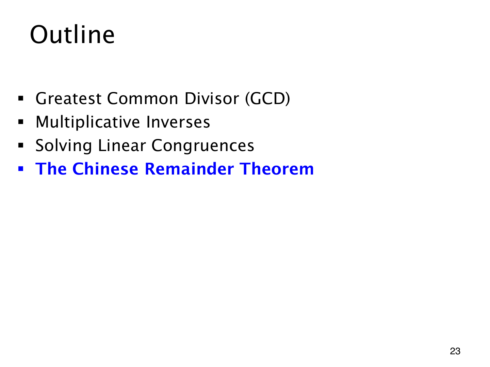

L1.13 · 第 23 页讲解原文
查看这一页课件

一个整数，同时满足几个余数条件
此前主要是在单个模数下解方程。现在要求同一个整数在不同模数下各有指定余数，必须同时满足全部条件，只满足其中一条不够。
目录的蓝色 The Chinese Remainder Theorem（中国剩余定理）标出本章最后一部分。这页没有额外计算，后面的古老余数问题将继续用到 GCD、Bézout 系数和求逆元的方法。
各模数之间的关系也会影响解的存在与唯一性。这里要区分两种条件：一个同余方程的系数与模数互素，以及多个模数两两互素，不能将两者混用。